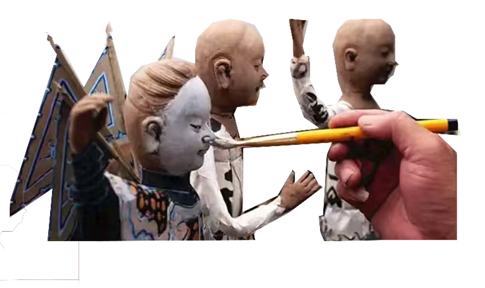
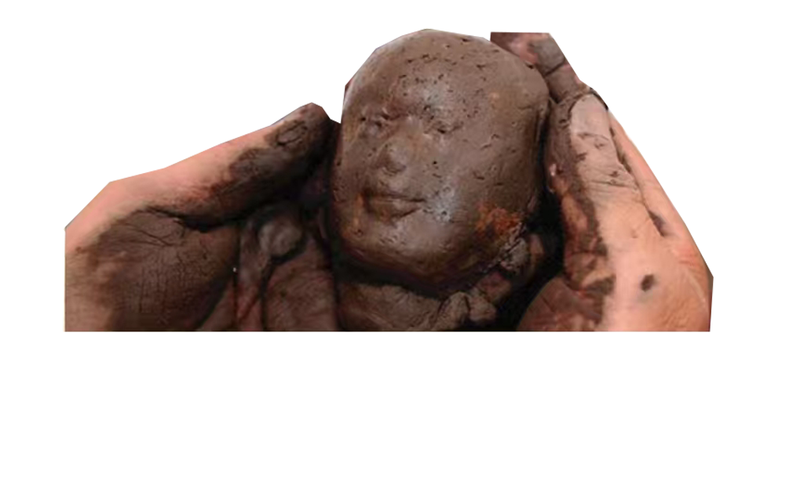
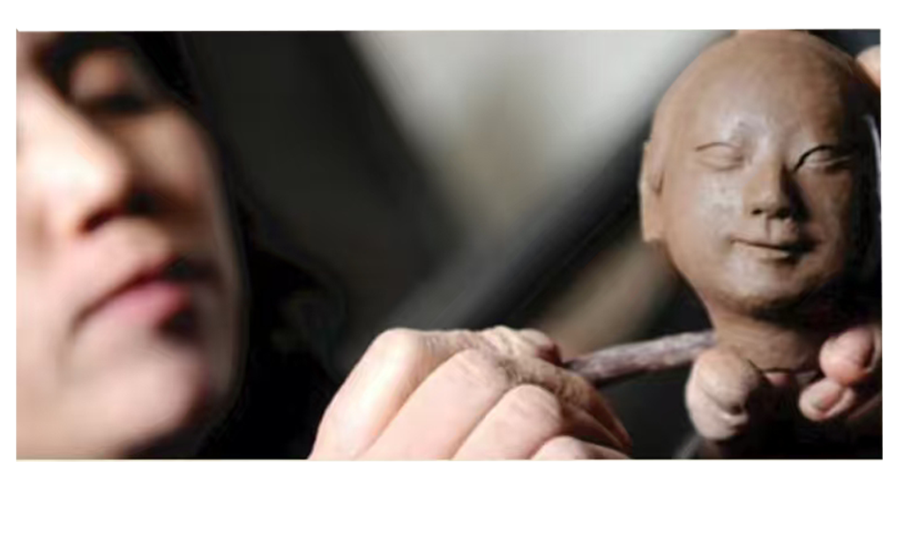

艺术渊源与起源发展
平遥纱阁戏人集雕塑、纸扎、彩绘、戏剧、人物造型五大艺术于一体，传承当地千年艺术血脉，以镇国寺彩绘、双林寺彩塑等为艺术源泉。
其有据可考的历史始于清代光绪三十二年，由平遥“六合斋”艺人许立廷等人制作36阁戏人，专供市楼陈列，成为古城年俗盛景。
纱阁高约70厘米，戏人高约50厘米，一阁一剧，每年春节、元宵节供民众游赏，独具特色。
戏韵藏匠心 · 纱间传千年
平遥纱阁戏人集雕塑、纸扎、彩绘、戏剧、人物造型五大艺术于一体，传承当地千年艺术血脉，以镇国寺彩绘、双林寺彩塑等为艺术源泉。
其有据可考的历史始于清代光绪三十二年，由平遥“六合斋”艺人许立廷等人制作36阁戏人，专供市楼陈列，成为古城年俗盛景。
纱阁高约70厘米，戏人高约50厘米，一阁一剧，每年春节、元宵节供民众游赏，独具特色。


选材以稻秸泥、高粱杆、洒金宣纸等天然材料为主，其中洒金宣纸韧性佳、着色鲜亮，扎制服饰宛若真纱，“纱阁”因此得名。
题材多取自晋剧、京剧、昆曲等传统剧目，36阁涵盖神话、民间生活等主题，角色囊括生旦净末丑全行当，神态贴合剧情。
以高粱杆、稻草扎制人形骨架，确定戏曲姿态，再进行泥塑头部与靴子造型，奠定整体结构。
先用草纸裹体塑形，再覆盖洒金宣纸，使造型更加饱满自然，同时保证质感轻盈通透。
绘制脸谱、搭配服饰与头饰，并制作道具与屏风，最终组合成完整的微型戏曲场景。
